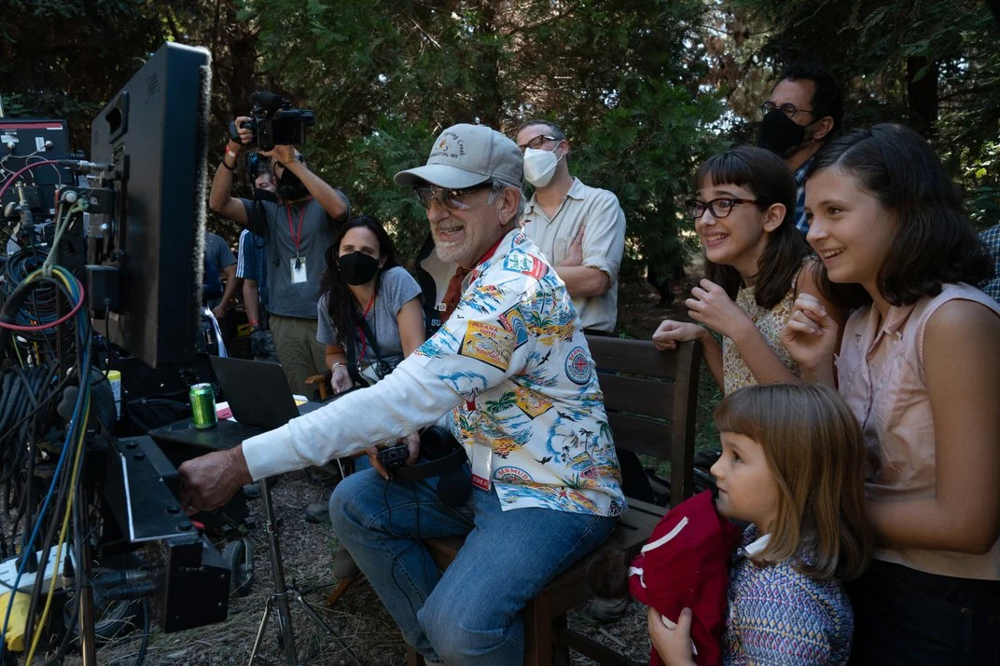

"Loosely based on Spielberg's childhood growing up in post-World War II era Arizona, from age seven to eighteen, a young man named Sammy Fabelman discovers a shattering family secret, and explores how the power of movies help us see the truth about each other and ourselves."
The Fabelmans is a 2022 American coming-of-age drama film directed by Steven Spielberg, who co-wrote and produced it with Tony Kushner. The film is a semi-autobiographical story loosely based on Spielberg's adolescence and first years as a filmmaker. It's told through an original story of the fictional Sammy Fabelman, a young aspiring filmmaker who explores how the power of films can help him see the truth about his dysfunctional family and those around him. It stars Gabriel LaBelle as Sammy, alongside Michelle Williams, Paul Dano, Seth Rogen, and Judd Hirsch in supporting roles. The film is dedicated to the memories of Spielberg's real-life parents, Leah Adler and Arnold Spielberg, who died in 2017 and 2020, respectively.
Spielberg had conceived the project as early as 1999, with his sister Anne writing a screenplay titled I'll Be Home. The project was withheld for 20 years, since Spielberg had reservations about exploring his family's story over concerns that his parents would be hurt. Spielberg revisited the project in 2019 with screenwriter and frequent collaborator Kushner while they were making West Side Story, and the screenplay was completed in late 2020. Development of the film officially began soon after, with casting taking place between March and May 2021. Principal photography began that July in Los Angeles and wrapped in September.
The Fabelmans premiered at the Toronto International Film Festival on September 10, 2022, where it won the People's Choice Award. Distributed by Universal Pictures, the film opened as a limited theatrical release in the U4nited States on November 11, 2022, and then expanded to a wide release on November 23. It underperformed at the box office compared to typical Spielberg projects, grossing only $44 million against a $40 million budget.
Nonetheless, the film received acclaim from critics and was named one of the top ten films of 2022 by the National Board of Review and the American Film Institute. It earned numerous awards and nominations including seven nominations at the 95th Academy Awards, including Best Picture, Best Director, Best Actress (Williams), and Best Supporting Actor (Hirsch). It also earned 11 nominations at the 28th Critics' Choice Awards and five at the 80th Golden Globe Awards, winning Best Motion Picture - Drama and Best Director.